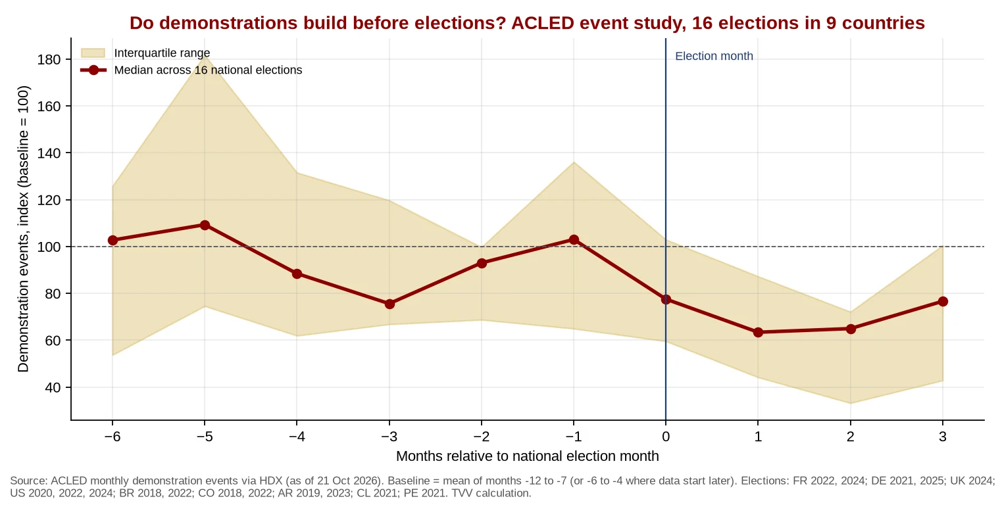

Q2. Demonstrations Around National Elections

Graph 4. Event study: demonstrations around 16 national elections (median index, pre-election baseline = 100). Index by month relative to election month (0): -2: 93, -1: 103, 0: 78, +1: 63, +2: 65, +3: 77. Elections: FR 2022, 2024; DE 2021, 2025; UK 2024; US 2020, 2022, 2024; BR 2018, 2022; CO 2018, 2022; AR 2019, 2023; CL 2021; PE 2021. Source: ACLED via HDX; TVV calculation.
Reading Graph 4. The run-up shows no systematic surge. The month before an election sits at about the baseline, the election month falls, and the two months after are quietest. Post-election flare-ups do happen (Brazil January 2023, Colombia June 2026, US January 2021), but they are outliers driven by contested results, not the median pattern. For risk work, this means watching for triggers inside campaigns: a disputed count, a police killing, a fuel-price jump, or a court ruling against a candidate. A rising protest count by itself is a weaker signal.